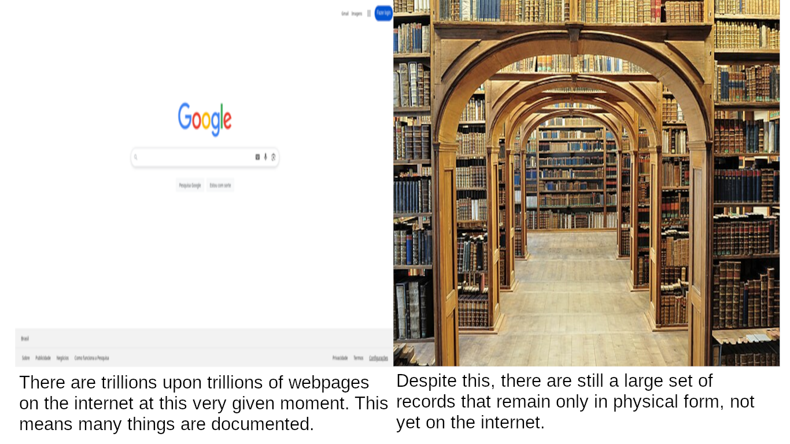

Koan 3: There is Want in the Midst of Plenty
For Koan 3, I have chosen to create a descriptive image, almost a collage, of sorts.
Koan 3 involves the idea that, despite the utter gargantuan size of the internet, that some media still exists only in physical form.
